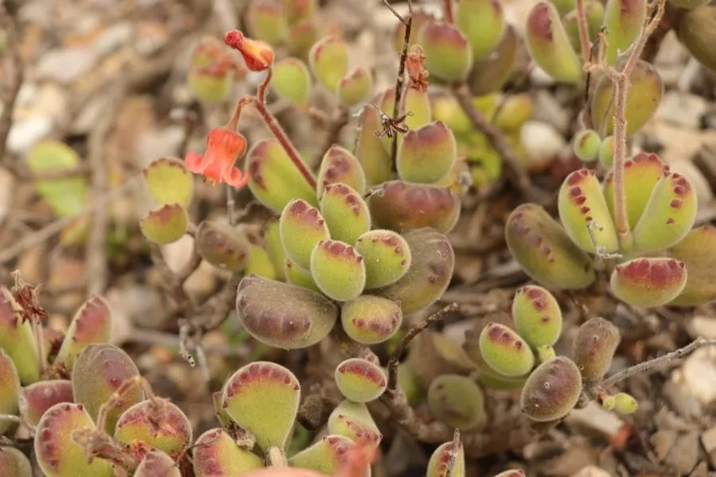

多肉植物 · 植物界
熊童子 Cotyledon tomentosa

景天科小型多肉，叶面覆绒毛、叶尖有红色爪痕，形似小熊脚掌，是极受欢迎的桌面萌系多肉，原产南非。
- 分类
- 门被子植物门纲木兰纲目虎耳草目科景天科属银波锦属
- 栖息环境
- 南非东开普省干旱的石质坡地，喜光、干燥、凉爽
- 地理分布
- 原产南非东开普省，中国及世界各地广泛盆栽
- 保护级别
- 暂无评估
物种志
熊童子为景天科银波锦属小型多肉植物，株高 15–30 厘米，茎直立或匍匐，绿色肉质叶对生，叶片肥厚，呈卵形，长 2–3 厘米，表面密被白色短绒毛，叶端有 2–5 个红色齿状突起，形似小熊的脚掌。花橙黄色，钟形，花期 5–7 月；果实为蓇葖果。
熊童子原产南非东开普省，生于干旱的石质坡地，喜阳光充足、凉爽干燥的环境，不耐寒也不耐酷暑，夏季高温时进入半休眠状态。充足光照和较大昼夜温差能让叶端的“红爪”更加鲜艳，光照不足则叶片变薄、爪痕变淡。它可用枝插和叶插繁殖，叶插时需将叶片平放在微潮的颗粒土上，生根较慢，需要耐心等待。
形态与习性
- 株高15–30 厘米，茎直立或匍匐
- 花期5–7 月，花橙黄色钟形
- 果期花后结蓇葖果
- 光照喜充足阳光，夏季需遮阴
- 水分耐旱，夏季休眠期严格控水
- 土壤疏松透气、排水良好的颗粒土
- 繁殖枝插、叶插
趣味知识
- 熊童子叶端的红色齿状突起像小熊的爪子，光照越足红爪越明显。
- 叶面密被白色绒毛，既能减少水分蒸发，也能反射部分强光。
- 夏季高温时熊童子会进入半休眠，此时浇水过多容易烂根。
- 叶插时把叶片平放在微潮颗粒土上，可能需要一两个月才生根。